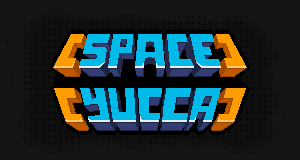

Award-winning, fast-paced shoot-'em-up mobile game featuring a unique cursor-based interaction system and a layer of strategic enemy management, all wrapped in a sarcastic sci-fi atmosphere.
Awarded "Best Mobile Game of Greece" in 2024 by the Gamathlon association.
Unlike traditional shoot-'em-ups, Space Yucca features a cursor that moves alongside the player's ship, creating a second layer of gameplay interaction. Players can directly interact with enemies using the cursor, triggering unique behaviors, interrupting actions, or even physically pushing certain enemy types. Many enemies also feature evolution stages. Allowing them to evolve can dramatically change the battlefield, encouraging players to make quick strategic decisions about which threats to prioritize and how to control enemy progression.
Space Yucca was developed over approximately three years and served as my first commercial-scale project. During development, I gained hands-on experience with:
While a small number of assets, such as selected backgrounds and the main music track, were outsourced, the vast majority of the project was developed independently.
Space Yucca was designed around a player-friendly monetization model.
Development of Space Yucca is now resuming after a temporary pause due to my mandatory military service. Future plans include expanding the game's content, refining its systems based on player feedback, increasing its visibility through marketing efforts, and bringing the experience to new platforms. The game's unique cursor-based interaction mechanics work equally well on mobile and PC, making a Steam release a natural next step in its evolution.
Mail: gkarianakis125@gmail.com
Github